마이데이터 모바일 애플리케이션 접근성 2차 심사 결과 조치 가이드
- 접근성 2차 심사 결과를 기준으로 작성된 항목입니다.
검사 항목별 평가
보고서 : (MA심사)_농협 마이데이터 01_for_Android_PHONE_2nd.pdf
| 번호 | 지침 | 화면경로 | 페이지 | 오류항목 | 오류내용 | 퍼블화면 | 개발화면 | 작업내용 |
|---|---|---|---|---|---|---|---|---|
| 1 | 7 초점 | 애플리케이션 공통 오류 | 9 | 부적절한 초점적용 |
- 해당 체크박스는 임의탐색(화면터치 방식) 시 탐색이 되지 않습니다. - 임의탐색 시에도 초점이 적용되도록 구현해야 합니다. |
MSPS3230 | mssb1150r mssb5330r | 조치완료 |
|
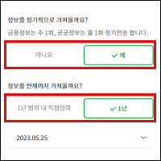
|
||||||||
| 2 | 18 보조기술과의 호환성 | 애플리케이션 공통 오류 | 10 | 스크린리더로 이용이 어려운 콘텐츠 |
- 스크린리더로 순차탐색 시 원하는 날짜 선택이 불가능합니다 - iOS의 기본 피커와 동일하게 구현을 하거나, 스크린리더로 이용이 가능하도록 구현해야 합니다. |
- | - | 조치완료 |
|
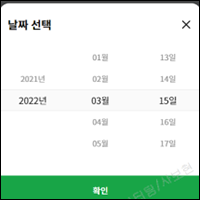
|
||||||||
| 3 | 7 초점 | 마이데이터홈 | 12 | 초점이 접근되지 않는 콘텐츠 |
- 링크에 href가 제공되지 않고 onclick 이벤트로만 기능이 구현된 경우 접근이 되지 않습니다 - 해당 링크에 role="button"을 제공해야 합니다 |
MSCO9210 | mssb2000r | 조치완료 |

|
||||||||
| 4 | 1 대체 텍스트 | 홈 > 전체 > 자산 > 자산현황 | 14 | 대체텍스트 미제공 |
- 로고 이미지에 대한 정보가 일부 누락되었습니다. - 로고 이미지에 대한 정보를 추가 제공해야 합니다. |
MSASM000 | fmas0000n | 조치완료 |
|
||||||||
| 5 | 7 초점 | 홈 > 전체 > 자산 > 자산현황 | 15 | 초점이 접근되지 않는 콘텐츠 |
- 링크에 href가 제공되지 않고 onclick 이벤트로만 기능이 구현된 경우 접근이 되지 않습니다 - 해당 링크에 role="button"을 제공해야 합니다. |
MSASM000 | fmas0000n | 조치완료 |
|
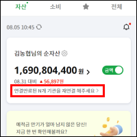
|
||||||||
| 6 | 18 보조기술과의 호환성 | 홈 > 전체 > 자산 > 자산현황 > 자산 사용관리(+콘텐츠) | 18 | 상태정보 미제공 |
- 선택유무에 대한 상태정보가 제공되지 않았으며, 스크린리더로 기능이 실행이 되지 않습니다. - 적절한 상태정보를 제공해야 하며, 스크린리더로 기능이 실행되도록 구현해야 합니다. - 또한 어느 상품의 즐겨찾기인지를 알 수 있도록 상품명 정보를 추가로 제공하는 것을 권장합니다. |
MSST5100 | mssb2900r | 조치완료 |

|
||||||||
| 7 | 1 대체 텍스트 | 홈 > 전체 > 자산 > 자산현황 > 자산연결 > 공동인증서 인증 | 22 | 부적절한 대체텍스트 | 보안키패드 영역 (권고사항으로 변경됨 : 안드로이드는 오류가 많아 꼭 수정이 필요하다고 하심) | - | - | 작업보류 |
| 8 | 7 초점 | 홈 > 전체 > 자산 > 자산현황 > 자산연결 | 25 | 부적절한 초점적용 | 1번 내용과 동일 | - | - | 동일작업 |
| 9 | 18 보조기술과의 호환성 | 홈 > 전체 > 플래너 > 금융 플래너 | 33 | 상태정보 부적절 |
- 초기에만 상태정보가 반대로 제공되어 있습니다. - 적절하게 수정해야 합니다. |
MSFP2000 | msdl1010r | 조치완료 |
|
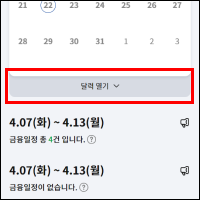
|
||||||||
보고서 : (MA심사)_농협 마이데이터 02_for_Android_PHONE_2nd.pdf
| 번호 | 지침 | 화면경로 | 페이지 | 오류항목 | 오류내용 | 퍼블파일 | 개발파일 | 작업내용 |
|---|---|---|---|---|---|---|---|---|
| 1 | 7 초점 | 애플리케이션 공통 오류 | 9 | 부적절한 초점적용 |
- 모바일 스크린리더 순차탐색시 서식과 <label>에 초점이 중복 접근하며,모바일 스크린리더 임의탐색시 <label>텍스트에만 접근하고 서식에 접근 할 수 없습니다. - 서식의 z-index 값을 수정해 <label>텍스트 위로 위치시켜 임의탐색시 서식을 탐색 할 수 있도록 하거나, 서식에 aria-hidden="true" 제공 후 <label>요소에 role="radio" aria-checked="true/false"를 제공해 스크린리더 순차, 임의 탐색시 서식에 접근 할 수 있도록 해야 합니다. |
MSAE1211P | fmmy2510p mser0110p | 조치완료 |

|
||||||||
| 2 | 13 인터페이스의 일관성 | 애플리케이션 공통 오류 | 10 | 일관되지 않은 컨트롤 |
- 동일한 기능의 컨트롤에 'Back' / '이전화면으로', 'Menu' / '전체메뉴' 로 일관되지 않은 대체 텍스트를 제공했습니다. - 동일한 기능의 컨트롤에는 일관된 명칭으로 대체텍스트를 제공해야 합니다. |
- | header mssb2200r | 조치완료 |

|
||||||||
| 3 | 18 보조기술과의 호환성 | 애플리케이션 공통 오류 | 11 | 부적절하게 제공한 역할 정보 |
- 기능이 없는 텍스트를 링크로 제공해 스크린리더 운용시 부적절한 역할 정보를 안내합니다. - 기능이 없는 요소는 텍스트로 인식 되도록 <a>요소를 링크를 삭제해야 합니다 |
MSCO2110 | header pedHeader pngHeader pstHeader | 조치완료 |
|
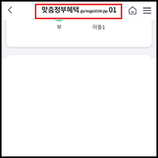
|
||||||||
| 4 | 7 초점 | 홈 > 전체 > 금융자산분석 > 자산진단 > 자산진단 맞춤정보 | 14 | 모바일 스크린리더에 초점 접근 불가 | 1번 내용과 동일함 | - | - | 동일작업 |
| 5 | 3 색에 무관한 인식 | 홈 > 전체 > 금융자산분석 > 자산진단 > 또래비교 | 16 | 색상만으로 구분된 콘텐츠 |
- 또래자산과 내 자산을 색상만으로 구분해 저시력자, 색각 이상자는 콘텐츠를 구분하기 어렵고, 대체콘텐츠가 제공되지 않아 스크린리더 사용자가 인지 할 수 없습니다. - 색상 뿐 아니라 모양, 패턴 등의 요소로 구분해야 하며, 스크린리더 사용자가 인지 할 수 있도록 대체 텍스트를 구분해야 합니다. |
- | - | 조치완료 |
|
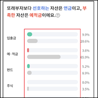
|
||||||||
| 6 | 7 초점 | 홈 > 전체 > 금융자산분석 > 자산진단 > 또래비교 | 17 | 모바일 스크린리더에 초점 접근 불가 | 1번 내용과 동일함 | - | - | 동일작업 |
| 7 | 7 초점 | 홈 > 전체 > 금융자산분석 > 자산진단 > 또래비교 | 18 | 부적절한 모바일 스크린리더 초점 이동 |
- 링크 실헹시 모바일 스크린리더 초점이 초기화됩니다. - 스크린리더 초점이 초기화되지 않고 해당 컨트롤 영역에 머물러야 합니다. |
MSAE1210P | fmmy2540p | 조치완료 |
|
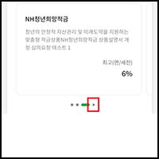
|
||||||||
| 8 | 18 보조기술과의 호환성 | 홈 > 전체 > 금융자산분석 > 자산진단 > 또래비교 | 19 | 스크린리더에서 인식 할 수 없는 콘텐츠 |
- 스크린리더 환경에서 그래프 영역에 초점이 접근되지 않아 그래프 콘텐츠 내용을 인지 할 수 없습니다 - 그래프에 제공된 정보와 동등한 내용의 대체 텍스트 또는 표 등의 대체 수단을 제공해야 합니다. |
MSAE1210P | fmmy2540p | 조치완료 |
|
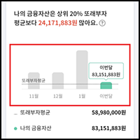

|
||||||||
| 9 | 7 초점 | 홈 > 전체 > 금융자산분석 > 연금진단 | 21 | 스크린리더 초점이 접근하지 않는 콘텐츠 |
- 계좌별 탭 변경시 콘텐츠 영역에 스크린리더 초점이 접근하지 않아 사용자는 콘텐츠를 인지 할 수 없습니다. - 활성화된 콘텐츠에 aria-hidden 속성이 있는 경우 속성을 삭제하거나, "false"로 수정하는 등 스크린리더에서 탐색 할 수 있도록 해야 합니다. |
MSAE2300 | fmmy3500r | 조치완료 |
|
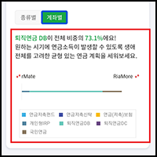
|
||||||||
| 10 | 16 예측가능성 | 홈 > 전체 > 금융자산분석 > 연금진단 | 22 | 사용자가 의도하지 않은 기능 실행 |
- 공적연금 선택 라디오 서식에서 '예' 선택시 사용자가 의도하지 않은 화면 전환이 발생합니다. - 라디오 버튼은 기능을 실행하는 컨트롤이 아닙니다. 별도의 기능을 실행하는 컨트롤을 제공하거나, 라디오 서식이 아닌 기본 버튼으로 제공하는 방법이 있습니다. 기본 버튼으로 제공시 title 속성 등으로 선택 여부를 알 수 있는 부가정보를 제공해야 합니다. |
MSAE2300 | fmmy3500r | 조치완료 |

|
||||||||
| 11 | 18 보조기술과의 호환성 | 홈 > 전체 > 금융자산분석 > 연금진단 | 23 | 스크린리더에서 인식 할 수 없는 콘텐츠 |
- 스크린리더 환경에서 그래프 영역에 초점이 접근되지 않아 그래프 콘텐츠 내용을 인지 할 수 없습니다. - 그래프에 제공된 정보와 동등한 내용의 대체 텍스트 또는 표 등의 대체 수단을 제공해야 합니다. |
MSAE2300 | fmmy3500r | 조치완료 |

|
||||||||
| 12 | 1 대체 텍스트 | 홈 > 전체 > 금융자산분석 > 연금진단 > 내 연금 진단 | 25 | 부적절하게 제공된 대체 텍스트 |
- 모바일스크린리더 초점 접근시 Previous slide', 'Next slide' 버튼으로만 인식해 동등한 정보를 인지 할 수 없습니다. - 화면에 표시된 텍스트 정보와 동등한 내용의 대체 텍스트를 제공해야 하며, 'next', 'previous' slide 등의 정보는 title로 제공해야 합니다. |
- | fmmy3518p | 조치완료 |
|
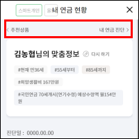
|
||||||||
| 13 | 1 대체 텍스트 | 홈 > 전체 > 금융자산분석 > 연금진단 > 내 연금 진단 | 26 | 부적절하게 제공한 대체 텍스트 |
- aria-label에 금액 정보를 제공하지 않아 스크린리더 운용시 동등한 정보를 인지 할 수 없습니다. - 생활비 금액 정보도 함께 제공해야 합니다. 예) aria-label="절약하며(118만원)" 등 |
MSAE2351P | fmmy3510pfmmy3310p | 조치완료 |

|
||||||||
| 14 | 7 초점 | 홈 > 전체 > 금융자산분석 > 연금진단 > 내 연금 진단 | 27 | 숨겨진 콘텐츠에 스크린리더 초점 접근 |
- 모바일 스크린리더 순차 탐색시 화면에 표시되지 않은 '내 연금 현황' 콘텐츠 및 '내 연금 진단' 콘텐츠 탐색 후 '진단 솔루션' 콘텐츠에 초점이 접근됩니다. - 화면에 표시되지 않은 콘텐츠는 display:none, visibility:hidden, aria-hidden="true" 속성을 제공하는 등 스크린리더 초점이 접근하지 않아야 합니다. |
MSAE2300 | fmmy3518p | 조치완료 |
|
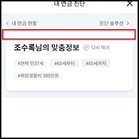
|
||||||||
| 15 | 7 초점 | 홈 > 전체 > 금융자산분석 > 연금진단 > 내 연금 진단 | 28 | 부적절한 모바일 스크린리더 초점 이동 |
- 레이어 팝업 내 '확인' 선택시 스크린리더 초점이 초기화 됩니다. - 스크린리더 초점이 초기화되지 않고 해당 콘텐츠 영역으로 회귀 해야 합니다. |
MSAE2351P | fmmy3510p | 조치완료 |
|
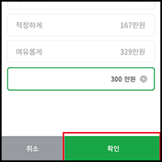
|
||||||||
| 16 | 12 입력 도움 | 홈 > 전체 > 금융자산분석 > 연금진단 > 내 연금 진단 | 29 | 레이블을 제공하지 않은 서식 |
- 직접입력 서식에 레이블을 제공하지 않았습니다. - 서식과 1:1 매치된 <label>요소 또는 서식에 title, aria-label 속성 등을 이용해 서식의 목적에 맞는 레이블을 제공해야 합니다. |
MSAE2351P | fmmy3510p | 조치완료 |
|
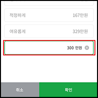
|
||||||||
| 17 | 7 초점 | 홈 > 전체 > 금융자산분석 > 조기은퇴진단 | 31 | 숨겨진 콘텐츠에 스크린리더 초점 접근 |
- 모바일 스크린리더 순차 탐색시 화면에 표시되지 않은 '이전 슬라이드 버튼', '다음 슬라이드 버튼'에 초점이 접근되며, 임의탐색시 컨트롤에 초점이 접근하지 않습니다. - 컨트롤을 화면에 표시해야 하며, 스크린리더 임의, 순차 탐색으로 모두 접근 할 수 있도록 구현 해야 합니다. |
- | - | 조치완료 |
|
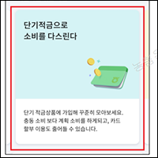
|
||||||||
| 18 | 18 보조기술과의 호환성 | 홈 > 전체 > 금융자산분석 > 조기은퇴진단 | 32 | 역할정보를 제공하지 않은 컨트롤 |
- 스크린리더 운용시 단순 텍스트로 인식해 기능이 있는 컨트롤임을 알기 어렵습니다 - 버튼, 링크 등 기능이 있는 컨트롤임을 알 수 있도록 역할 정보를 제공해야 합니다 |
- | fmmy3514p | 조치완료 |
|
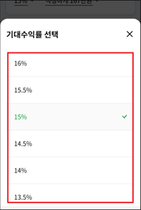
|
||||||||
| 19 | 1 대체 텍스트 | 홈 > 전체 > 금융자산분석 > 조기은퇴진단 > 조기은퇴 맞춤정보 | 34 | 대체텍스트가 부적절하게 제공된 이미지 |
- 이미지의 대체 텍스트를 사용자의 투자성향만 제공했습니다. - 전체 이미지에 대한 동등한 정보를 제공 후 권장 기대수익률 정보를 추가해야 합니다. 예) 안정형 권장 기대 수익률 2.6%, 투자위험 5.5%, 안정 추구형 권장 기대 수익율 (3.1%), 투자위험 7.5% (고객) |
- | - | 조치완료 |
|
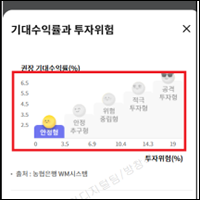
|
||||||||
| 20 | 1 대체 텍스트 | 홈 > 전체 > 금융자산분석 > 세금계산기 > 종합소득세 | 36 | 대체텍스트가 부적절하게 제공된 이미지 |
- 모든 로고 이미지에 대체 텍스트를 '미래에셋증권 로고'로 부적절하게 제공했습니다. - 각 로고 정보에 맞는 대체 텍스트를 제공해야 합니다. |
MSAS2300 | mstx1160p fmas1440r | 조치완료 |
|
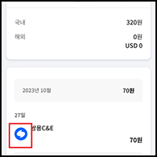
|
||||||||
| 21 | 1 대체 텍스트 | 홈 > 전체 > 금융자산분석 > 세금계산기 > 종합소득세 | 36 | 대체텍스트가 부적절하게 제공된 컨트롤 |
- 컨트롤의 대체 텍스트를 '필요경비 툴팁 열기'로 부적절하게 제공했습니다. - 원천징수 툴팁 콘텐츠에 맞는 대체 텍스트를 제공해야 합니다. |
MSAE8100 | mstx1110r | 조치완료 |

텍스트 변경 : 원천징수 툴팁 열기
|
||||||||
| 22 | 7 초점 | 홈 > 전체 > 금융자산분석 > 세금계산기 > 종합소득세 | 37 | 모바일 스크린리더에 초점 접근 불가 | 1번 내용과 동일함 | MSAE8100 | mstx1110r | 조치완료 |
|
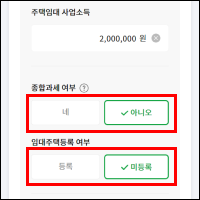
|
||||||||
| 23 | 18 보조기술과의 호환성 | 홈 > 전체 > 금융자산분석 > 세금계산기 > 종합소득세 | 38 | 부적절하게 제공된 역할 정보 |
- 기능이 없는 컨트롤을 링크로 제공했습니다. - 컨트롤의 목적에 맞는 기능을 제공하거나, 기능이 없는 경우 <a>를 삭제해 스크린리더에서 단순 이미지 및 텍스트로 인식해야 합니다. |
MSAS2300 | - | 조치완료 |

|
||||||||
| 24 | 18 보조기술과의 호환성 | 홈 > 전체 > 금융자산분석 > 세금계산기 > 종합소득세 | 39 | 역할 정보 미제공 |
- 기능이 있는 컨트롤을 단순 텍스트로 제공해 스크린리더 운용시 기능이 있음을 알기 어렵습니다. - 링크 또는 버튼으로 제공해 기능이 있는 컨트롤임을 안내해야 합니다. |
MSAE81e0 | mstx1150r | 조치완료 |

role="button" tabindex="0" title="종합소득세 절세팁 페이지 이동" 추가
|
||||||||
| 25 | 1 대체 텍스트 | 홈 > 전체 > 생활편의 > 맞춤정부혜택 | 43 | 대체텍스트를 부적절하게 제공한 이미지 | 관리자 등록 이미지 (이미지에 있는 모든 텍스트 적용 필요) | - | - | 조치완료 |
| 26 | 4 명도 대비 | 홈 > 전체 > 생활편의 > 맞춤정부혜택 | 44 | 명도대비 기준 이하 콘텐츠 |
- 텍스트와 배경간의 명도대비가 3:1 이하로 제공되어, 텍스트 정보를 인식하기가 어렵습니다. - 텍스트와 배경간의 명도대비를 최소 3:1 이상으로 제공해 저시력, 색약, 노인 등의 사용자가 콘텐츠 내용을 인식 할 수 있도록 구현해야 합니다 - 캡쳐된 이미지로 체크한 명도대비이므로 수치가 정확하지 않을 수 있습니다. |
- | - | 조치완료 |
|
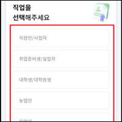
|
||||||||
| 27 | 7 초점 | 홈 > 전체 > 생활편의 > 맞춤정부혜택 | 45 | 숨겨진 콘텐츠에 모바일 스크린리더 초점 접근 |
- 모바일 스크린리더 탐색시 가려진 헤더 콘텐츠 영역(Back, 빈링크, Home, Menu 버튼 등)에 초점이 접근합니다. - 화면에 표시되지 않은 콘텐츠에 스크린리더 초점이 접근하지 않아야 합니다. |
- | mscm1310p | 조치완료 |
|
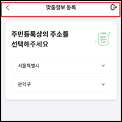
|
||||||||
| 28 | 7 초점 | 홈 > 전체 > 생활편의 > 맞춤정부혜택 | 46 | 모바일 스크린리더에 초점 접근 불가 | 1번 내용과 동일함 | MSLF2100 | msgs1010rmsgs1035r | 조치완료 |

주석표시 참고 : [접근성_2024] 모바일 스크린리더에 초점 접근 불가

|
||||||||
| 29 | 7 초점 | 홈 > 전체 > 생활편의 > 맞춤정부혜택 | 46 | 부적절한 모바일 스크린리더 초점 이동 | 7번 내용과 동일함 | MSLF2100 | msgs1010r | 조치완료 |
|
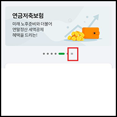 |
||||||||
| 30 | 16 예측가능성 | 홈 > 전체 > 생활편의 > 맞춤정부혜택 | 47 | 사용자가 의도하지 않은 기능 실행 |
- 라디오버튼 선택만으로 페이지 전환이 발생합니다. - 라디오 버튼은 기능을 실행하는 컨트롤이 아닙니다. 기능을 실행하는 별도의 컨트롤을 제공해 컨트롤을 통해 기능이 동작되도록 하거나, 라디오 버튼이 아닌 기본 버튼으로 제공하는 방법이 있습니다. |
MSLF2130 | msgs1032rmsgs1034r | 조치완료 |
|
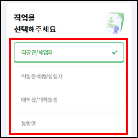 li 태그에 role="button" aria-label="대체텍스트" title="{이동할 페이지명} 페이지 이동" 추가하여 버튼 기능으로 변경함
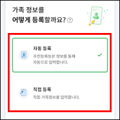
|
||||||||
| 31 | 18 보조기술과의 호환성 | 홈 > 전체 > 생활편의 > 맞춤정부혜택 | 48 | 부적절하게 제공된 기능 정보 |
- 분류(전체, 생활지원, 건강 등) 변경 후 콘텐츠 영역에 '복지로 본인 추천혜택' 으로 부적절한 정보를 제공합니다. - 탭 콘텐츠 내용에 맞는 기능 정보를 제공해야 합니다. |
- | msgs1010r | 조치완료 |
|
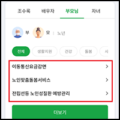 title="복지로 본인 추천혜택" 을 title="혜택 상세보기 이동"텍스트 변경
|
||||||||
| 32 | 18 보조기술과의 호환성 | 홈 > 전체 > 생활편의 > 맞춤정부혜택 | 49 | 상태 정보 미제공 |
- 선택된 컨트롤에 대한 정보를 시각적인 요소로만 제공했습니다. - 선택된 버튼에 title 속성 등으로 선택됐음을 알 수 있도록 부가정보를 제공해야 합니다. |
MSLF2100 | msgs1024pmsgs1010r | 조치완료 |
|
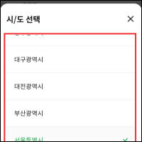 title="선택됨" 추가

aria-selected="true" 대신 title="선택됨"으로 변경함 (role="tab"이 아니면 해당 aria속성은 읽어주지 않음)
|
||||||||
| 33 | 7 초점 | 홈 > 전체 > 생활편의 > 맞춤정부혜택 > 정보 설정 | 51 | 모바일 스크린리더에 초점 접근 불가 | 1번 내용과 동일함 | MSLF2190 | msgs1025r | 조치완료 |
|
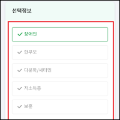
|
||||||||
| 34 | 18 보조기술과의 호환성 | 홈 > 전체 > 생활편의 > 맞춤정부혜택 > 정보 설정 | 52 | 상태 정보 미제공 | 32번 내용과 동일함 | - | - | 동일작업 |
| 35 | 7 초점 | 홈 > 전체 > 설정/관리 > 연결자산 관리 | 54 | 모바일 스크린리더에 초점 접근 불가 | 1번 내용과 동일함 | MSPS4000 | mssb2200r | 조치완료 |

|
||||||||
| 36 | 7 초점 | 홈 > 전체 > 설정/관리 > PUSH 관리 | 56 | 스크린리더 탐색 불가 | 해당 오류가 발견되지 않음 (IOS 정상 / AOS UI 공통) | - | - | 작업제외 |
| 37 | 7 초점 | 홈 > 전체 > MY > MY정보 | 59 | 숨겨진 콘텐츠에 스크린리더 초점 접근 |
- 모바일 스크린리더 순차 탐색시 콘텐츠 내용에 맞지 않는 부적절한 <caption>에 초점이 접근합니다. ('고객구분 별 기준점수 등급표') - 콘텐츠 내용에 맞지 않고 화면에 표시되지 않은 숨겨진 콘텐츠에 초점이 접근하지 않아야 합니다. |
MSST3100 | fmse3000r | 조치완료 |
|
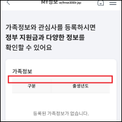
|
||||||||
| 38 | 18 보조기술과의 호환성 | 홈 > 전체 > MY > MY정보 | 60 | 부적절하게 제공한 역할 정보 |
- 기능이 없는 콘텐츠를 링크로 제공했습니다. - 기능이 없는 콘텐츠는 스크린리더에서 단순 텍스트로 인식되도록 구현해야 합니다. |
MSST3100 | fmse3000r | 조치완료 |
|
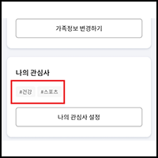
|
||||||||
보고서 : (MA심사)_농협 마이데이터 01_for_iOS_PHONE_2nd.pdf
| 번호 | 지침 | 화면경로 | 페이지 | 오류항목 | 오류내용 | 퍼블파일 | 개발파일 | 작업내용 |
|---|---|---|---|---|---|---|---|---|
| 1 | 18 보조기술과의 호환성 | 애플리케이션 공통 오류 | 9 | 스크린리더로 이용이 어려운 콘텐츠 | 동일오류 | - | - | 동일오류 |
| 2 | 7 초점 | 마이데이터홈 | 11 | 초점이 접근되지 않는 콘텐츠 | 동일오류 | - | - | 동일오류 |
| 3 | 1 대체 텍스트 | 홈 > 전체 > 자산 > 자산현황 | 13 | 대체텍스트 미제공 | 동일오류 | - | - | 동일오류 |
| 4 | 7 초점 | 홈 > 전체 > 자산 > 자산현황 | 14 | 초점이 접근되지 않는 콘텐츠 | 동일오류 | - | - | 동일오류 |
| 5 | 18 보조기술과의 호환성 | 홈 > 전체 > 자산 > 자산현황 > 자산 사용관리(+콘텐츠) | 17 | 상태정보 미제공 | 동일오류 | - | - | 동일오류 |
| 6 | 7 초점 | 홈 > 전체 > 자산 > 자산현황 > 자산연결 | 19 | 부적절한 초점이동 |
- 제공된 체크박스로 초점접근 시 화면 최상단으로 자동 스크롤 되고 있습니다. * 초점접근 시 화면이 스크롤 되지 않도록 구현하는 것을 권장합니다. |
- | - | 조치완료 |
|
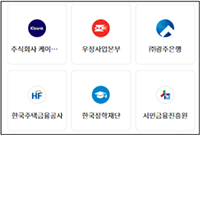 체크박스에 초점이 접근이 될 경우에만 화면이 스크롤 되고 있는 현상으로, label태그에 role="checkbox" 기능을 추가하여 체크박스에는 접근이 안되도록 변경함
|
||||||||
| 7 | 1 대체 텍스트 | 홈 > 전체 > 자산 > 자산현황 > 자산연결 > 공동인증서 인증 | 22 | 부적절한 대체텍스트 | 동일오류 | - | - | 동일오류 |
| 8 | 18 보조기술과의 호환성 | 홈 > 전체 > 플래너 > 금융 플래너 | 33 | 상태정보 부적절 | 동일오류 | - | - | 동일오류 |
보고서 : (MA심사)_농협 마이데이터 02_for_iOS_PHONE_2nd.pdf
| 번호 | 지침 | 화면경로 | 페이지 | 오류항목 | 오류내용 | 퍼블파일 | 개발파일 | 작업내용 |
|---|---|---|---|---|---|---|---|---|
| 1 | 13 인터페이스의 일관성 | 애플리케이션 공통 오류 | 9 | 일관되지 않은 컨트롤 | 동일오류 | - | - | 동일오류 |
| 2 | 18 보조기술과의 호환성 | 애플리케이션 공통 오류 | 10 | 부적절하게 제공한 역할 정보 | 동일오류 | - | - | 동일오류 |
| 3 | 3 색에 무관한 인식 | 홈 > 전체 > 금융자산분석 > 자산진단 > 또래비교 | 14 | 색상만으로 구분된 콘텐츠 | 동일오류 | - | - | 동일오류 |
| 4 | 18 보조기술과의 호환성 | 홈 > 전체 > 금융자산분석 > 자산진단 > 또래비교 | 15 | 스크린리더에서 인식 할 수 없는 콘텐츠 | 동일오류 | - | - | 동일오류 |
| 5 | 7 초점 | 홈 > 전체 > 금융자산분석 > 연금진단 | 17 | 스크린리더 초점이 접근하지 않는 콘텐츠 | 동일오류 | - | - | 동일오류 |
| 6 | 16 예측가능성 | 홈 > 전체 > 금융자산분석 > 연금진단 | 18 | 사용자가 의도하지 않은 기능 실행 | 동일오류 | - | - | 동일오류 |
| 7 | 1 대체 텍스트 | 홈 > 전체 > 금융자산분석 > 연금진단 > 내 연금 진단 | 20 | 부적절하게 제공된 대체 텍스트 | 동일오류 | - | - | 동일오류 |
| 8 | 1 대체 텍스트 | 홈 > 전체 > 금융자산분석 > 연금진단 > 내 연금 진단 | 21 | 부적절하게 제공한 대체 텍스트 | 동일오류 | - | - | 동일오류 |
| 9 | 7 초점 | 홈 > 전체 > 금융자산분석 > 연금진단 > 내 연금 진단 | 22 | 숨겨진 콘텐츠에 스크린리더 초점 접근 | 동일오류 | - | - | 동일오류 |
| 10 | 12 입력 도움 | 홈 > 전체 > 금융자산분석 > 연금진단 > 내 연금 진단 | 23 | 레이블을 제공하지 않은 서식 | 동일오류 | - | - | 동일오류 |
| 11 | 7 초점 | 홈 > 전체 > 금융자산분석 > 조기은퇴진단 | 25 | 숨겨진 콘텐츠에 스크린리더 초점 접근 | 동일오류 | - | - | 동일오류 |
| 12 | 1 대체 텍스트 | 홈 > 전체 > 금융자산분석 > 조기은퇴진단 > 조기은퇴 맞춤정보 | 27 | 대체텍스트가 부적절하게 제공된 이미지 | 동일오류 | - | - | 동일오류 |
| 13 | 1 대체 텍스트 | 홈 > 전체 > 금융자산분석 > 세금계산기 > 종합소득세 | 29 | 대체텍스트가 부적절하게 제공된 이미지 | 동일오류 | - | - | 동일오류 |
| 14 | 1 대체 텍스트 | 홈 > 전체 > 금융자산분석 > 세금계산기 > 종합소득세 | 29 | 대체텍스트가 부적절하게 제공된 컨트롤 | 동일오류 | - | - | 동일오류 |
| 15 | 18 보조기술과의 호환성 | 홈 > 전체 > 금융자산분석 > 세금계산기 > 종합소득세 | 30 | 부적절하게 제공된 역할 정보 | 동일오류 | - | - | 동일오류 |
| 16 | 18 보조기술과의 호환성 | 홈 > 전체 > 금융자산분석 > 세금계산기 > 종합소득세 | 31 | 역할 정보 미제공 | 동일오류 | - | - | 동일오류 |
| 17 | 1 대체 텍스트 | 홈 > 전체 > 생활편의 > 맞춤정부혜택 | 35 | 대체텍스트를 부적절하게 제공한 이미지 | 동일오류 | - | - | 동일오류 |
| 18 | 4 명도 대비 | 홈 > 전체 > 생활편의 > 맞춤정부혜택 | 36 | 명도대비 기준 이하 콘텐츠 | 동일오류 | - | - | 동일오류 |
| 19 | 7 초점 | 홈 > 전체 > 생활편의 > 맞춤정부혜택 | 37 | 숨겨진 콘텐츠에 모바일 스크린리더 초점 접근 | 동일오류 | - | - | 동일오류 |
| 20 | 16 예측가능성 | 홈 > 전체 > 생활편의 > 맞춤정부혜택 | 38 | 사용자가 의도하지 않은 기능 실행 | 동일오류 | - | - | 동일오류 |
| 21 | 18 보조기술과의 호환성 | 홈 > 전체 > 생활편의 > 맞춤정부혜택 | 39 | 부적절하게 제공된 기능 정보 | 동일오류 | - | - | 동일오류 |
| 22 | 18 보조기술과의 호환성 | 홈 > 전체 > 생활편의 > 맞춤정부혜택 | 40 | 상태 정보 미제공 | 동일오류 | - | - | 동일오류 |
| 23 | 18 보조기술과의 호환성 | 홈 > 전체 > 생활편의 > 맞춤정부혜택 > 정보 설정 | 42 | 상태 정보 미제공 | 동일오류 | - | - | 동일오류 |
| 24 | 1 대체 텍스트 | 홈 > 전체 > 설정/관리 > 연결자산 관리 | 44 | 대체텍스트를 제공하지 않은 이미지 |
- 이미지에 대체 텍스트를 제공하지 않았습니다. - <img>요소에 alt 속성은 필수로 제공해야 하며, 이미지의 내용과 동등한 정보의 대체 텍스트를 제공해야 합니다. - 이미지 옆에 텍스트로 정보가 제공된 경우 대체 텍스트를 빈값(alt="")으로 제공해도 무방합니다. |
- | - | 조치완료 |
|
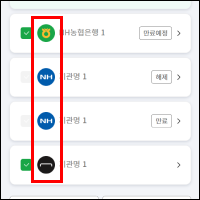 |
||||||||
| 25 | 18 보조기술과의 호환성 | 홈 > 전체 > 설정/관리 > 연결자산 관리 | 45 | 역할 정보가 제공되지 않은 컨트롤 |
- 모바일 스크린리더 운용시 단순 텍스트로 인식합니다. - 스크린리더에서 링크 또는 버튼 등의 기능이 있는 컨트롤에 대한 역할 정보를 인식해야 합니다. 또한 각 컨트롤의 명확한 기능을 알 수 있도록 title 속성 등으로 기관명등을 구분한 부가 정보를 제공해야 합니다. 예) '농협은행 기관 상세보기' 등 |
MSPS4000 | mssb2200r | 조치완료 |
|
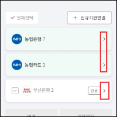 href="javascript:;" 속성 추가 후 role='link' tabindex='0' title 속성 삭제
|
||||||||
| 26 | 7 초점 | 홈 > 전체 > 설정/관리 > PUSH 관리 | 47 | 스크린리더 탐색 불가 | 정상 작동 됨 | - | - | 오류아님 |
| 27 | 18 보조기술과의 호환성 | 홈 > 전체 > MY > MY정보 | 50 | 부적절하게 제공한 역할 정보 | 동일오류 | - | - | 동일오류 |